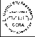

New links added 2-27-14
Links
Click on the Logo of the site you want to go or underlined text.
Updated 8-14-22
- The Franklin County Ohio Amateur Radio Emergency Service

The Capital City Repeater Association- The Central Ohio Traffic Net
- https://www.fcc.gov - Find Part 97 rules on the Amateur service and renew your license
- https://www.arrl.org - Lots of information for the beginning or experienced ham
- https://www.rfcec.com - Information to self-teach yourself RF electronics principles
- https://hamstudy.org - Practice ham radio tests
- https://www.dstarusers.org and http://www.dstarinfo.com - good resources on D-STAR technology
- http://www.m0ukd.com/Calculators/Slim_Jim/index.php - Learn how to build your own "Slim Jim" or J-Pole antenna; includes a form to calculate the dimensions of the antenna you want to build
- https://batteryuniversity.com - lots of information about how batteries work
- https://www.ac6v.com - A clearinghouse of links to amateur radio and commercial sites
- https://radio-locator.com - Resource for looking up information about AM and FM broadcast stations; includes transmitter info and signal patterns
- https://www.rcgroups.com - Resource for all things radio controlled
- https://www.techbyter.com - (Mostly) computer-related site produced by local ham Bill Blinn N8POV
- http://ohiosimplexnet.webs.com - The Ohio Simplex Net
- https://www.aaastateofplay.com/all-about-ham-radio-for-beginners/ More Ham Radio Resources
Software Defined Ham Radio Links:
A site for general info is naturally the Wiki site located here: https://en.wikipedia.org/wiki/Software-defined_radio
For more on interconnection to the internet by these radios you might try this link on WebSDR: http://websdr.org/
One other sort of generic link on the subject is here: https://www.sdr-radio.com/
Now then, for specific items, these are links for products that are either kits or ready to go systems. The most popular and best selling transceiver systems are Flex: https://www.flexradio.com/
These folks are newer on the scene and I don't know much about them but the idea is a good one. Kits of mostly board sets that can give you a lot of variety in the system you would build yourself: http://www.nuand.com/blog/shop/
And then there is the FunCube. A very popular system for experimenters for several years now. https://www.funcubedongle.com/
The last item would be this item from NooElec. They realized that there was no HF capability for the inexpensive DVB-T USB devices so they made an up-converter for them. This allows you to use any of the kit or cheaper DVB-T sticks from eBay as the start point and with the up-converter you can listen to HF.
https://www.nooelec.com/store/sdr/ham-it-up.html
Other suggestions:
- Check the equipment manufacturer's web page if looking for technical specs, manuals, etc.
- When all else fails, use a search engine such as Google to search for information